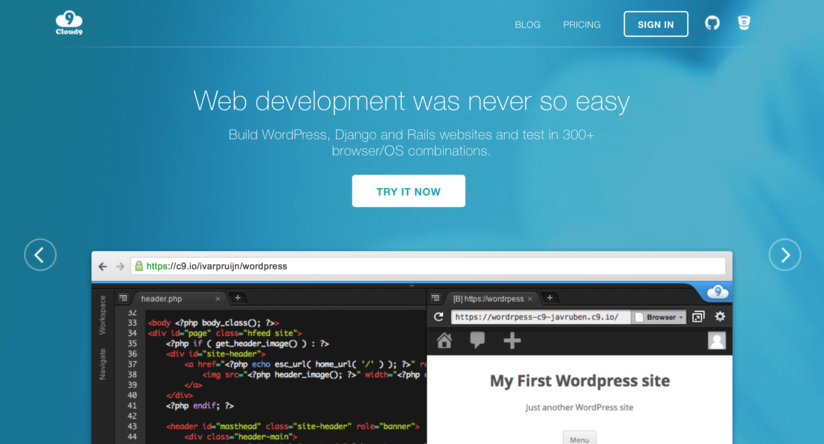
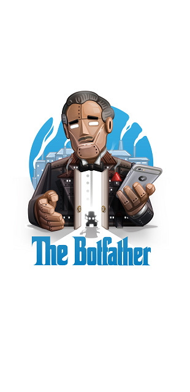
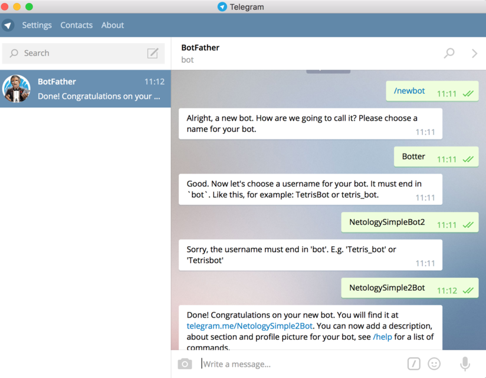
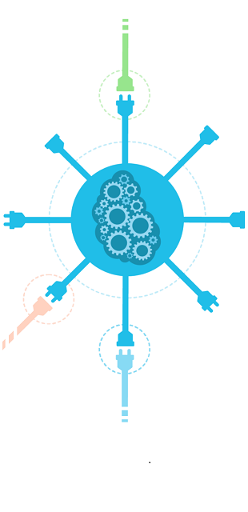
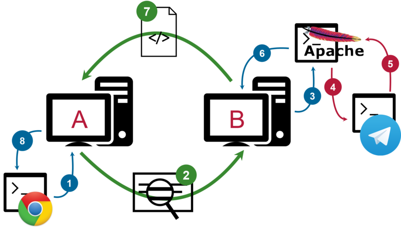
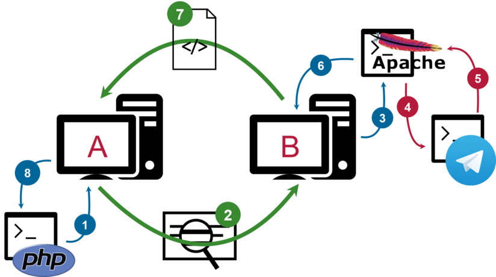
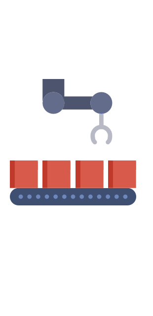
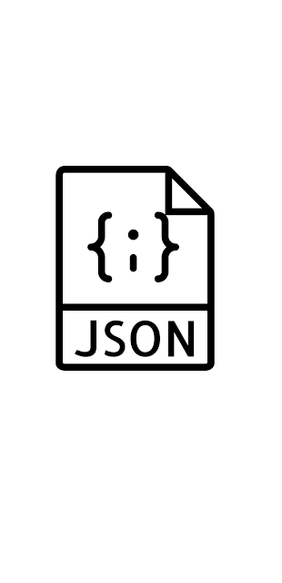

Telegram + PHP = Бот
Дима Фитискин, Нетология
Telegram + PHP = Бот
 Дима Фитискин Нетология
Дима Фитискин Нетология
Дима Фитискин
Руковожу курсами по программированию в Нетологии
Cloud9

Cloud9 - облачная среда разработки. Отличное решение для тех, кто ранее не программировал на PHP

Botfather - специальный бот, для создания других ботов
Токен - это пароль, чтобы телеграм понял что это мы

Задаем имя и аккаунт, получаем токен

API - набор доступных команд с описанием как их вызвать
Основные команды Telegram
getMe — получить информацию о боте;getUpdates — получить информацию о новых сообщениях и событиях;sendMessage — отправить сообщение.
Принцип вызова команд API
- чтобы выполнить команду нужно просто сделать HTTP запрос определенного адреса;
- можно передать дополнительные данные;
- сервер Telegram выполнит команду и вернет результат;
- а так же некоторые данные.
Http-клиент и http-сервер

Http-клиент и http-сервер

Алгоритм бота
- берем токен;
- формируем адрес команды;
- запрашиваем данные по адресу команды;
- получаем результат в переменную;
- выводим содержимое переменной на экран.

Программно легко обрабатывать структурированные данные и сложно не структурированные
Типы данных
- строка;
- число;
- список;
- структура.
Список
- имеет числовые индексы;
- индекс начинается с 0 и идут подряд;
- под каждым индексом хранятся элемент, в котором те или иные данные (строка, число, список, структура);
- можем получить общее кол-во элементов;
- можем получить элемент по индексу;
- идеально для хранения неограниченного числа однотипных данных.
Структура
- произвольное строковые свойства;
- значения свойств это строка, число, список или структура;
- можем получить список свойств;
- можем получить значение свойства;
- похож на список со строковыми индексами.
Форматы данных
- нужны чтобы описать данные;
- позволяют структурировать и передавать данные между программами написанными на разных языках программирования;
- наиболее распространенные: XML, JSON, CSV.

JSON - формат описания объектов из языка Javascript
JSON - срособ разметки данных
- строки и целые и дробные числа;
- можно использовать структуры
{} и списки [];
- кавычки у названий свойств объекта обязательны, и только двойные
";
- активно применяется в API и местами вытеснил XML.
JSON списки
[1, 2, 3, 4, 5]
["Иван", "Петр", "Николай", "Олег"]
["Иван", 34, 99, "Олег"]
JSON структуры
{
name: "Иван",
age: 27,
address: "Ленина, 34-102"
}
JSON общий случай
[
{name: "Иван", age: 27, address: "Ленина, 34-102"},
{name: "Ольга", age: 22, address: "Пушкина, 4-13"},
{name: "Илья", age: 32, address: "Сталина, 2-51"}
]
Парсинг - преобразование из одного формата в другой
Алгоритм бота
- запрашиваем новые сообщения;
- получаем результат;
- преобразуем результат в структуры данных PHP;
- получаем свойства из структуры данных;
- выводим на экран.
Условие if-else
$names = ['Иван', 'Петр', 'Олег'];
if ($names) { echo 'Имена есть' . PHP_EOL;
} else {
echo 'Имена не заданы' . PHP_EOL;
}
Цикл foreach
$names = ['Иван', 'Петр', 'Олег'];
foreach ($names as $name) {
echo $name . PHP_EOL;
}
Алгоритм бота
- получаем новые сообщения;
- если ошибка, завершаем работу;
- если список пуст, завершаем работу;
- перебираем сообщения с помощью цикла;
- для каждого сообщения получаем имя отправителя и текст;
- формируем строку
- выводим на экран.
Функции
- позволяют многократно использовать определенный фрагмент кода;
- имеют аргументы;
- возвращают результат.
Цикл foreach
function greeting($name) {
echo 'Привет, ' . $name . '!' . PHP_EOL;
}
greeting('Иван');
Подключение библиотек
- делает доступным код из одного файла внутри другого файла;
- лучше организация кода;
- меньше копирования — меньше ошибок.
Цикл foreach
lib.php
function greeting($name) {
echo 'Привет, ' . $name . '!' . PHP_EOL;
}
app.php
include('lib.php');
greeting('Иван');
План рефакторинга
- выносим вызов команд и обработку результата в функцию;
- выносим функцию в отдельный файл;
- подключаем файл;
- проверяем работу.
Отправка сообщений пользователям Telegram
- бот может отправить сообщение только в чат;
- для этого нам нужно знать идентификатор чата;
- получить идентификатор чата мы можем только если кто-то инициирует переписку с ботом;
- бот не может сам инициировать переписку.
Алгоритм Эхо-бота
- получаем сообщения;
- для каждого сообщения получаем чат и текст сообщения;
- отправляем сообщение с этим текстом в этот чат;
- выводим на экран результат.
Хьюстон, у нас проблема - наш бот каждый раз отвечает на все сообщения, даже на те, на котрые уже ответил
Алгоритм бота
- проверяем файл;
- если файл существует, получаем из него ID последнего обновления;
- добавляем его в параметры запроса;
- запрашиваем сообщения с параметрамиу;
- обрабатываем сообщения;
- запоминаем ID последнего обновления в переменную;
- сохраняем ID в файл.
;
Обработка команд Telegram
Что такое команды
Анализировать сообщения — очень сложная задача. Поэтому самый простой вариант — сделать бота понимающего простые команды:
- команды начинаются со
/;
- команды позволяют давать боту четкие указания;
- при начале беседы бот получает команду
/start;
- можно настроить и другие команды и упростить их вызов.
Исходный код
Посмотреть исходный код бота на Github
Приходите на консультацию по курсу PHP!
Дима Фитискин